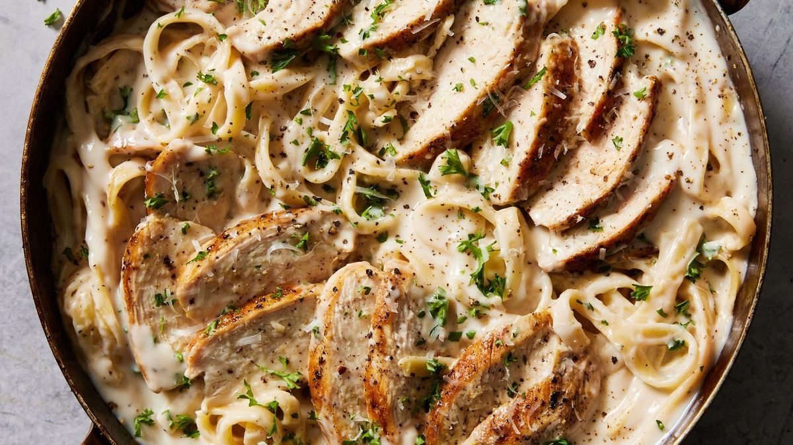

Chicken Alfredo

Chicken Alfredo is a creamy pasta dish made with fettuccine noodles, grilled chicken, and a rich Alfredo sauce. It's a popular Italian-American comfort food.
Ingredients
- Fettuccine noodles
- Chicken breasts (sliced)
- Butter
- Heavy cream
- Garlic (minced)
- Parmesan cheese (grated)
- Salt
- Black pepper
- Olive oil
- Parsley (chopped, for garnish)
Steps
- Cook fettuccine noodles according to package instructions. Drain and set aside.
- In a skillet, heat olive oil over medium heat. Cook chicken breasts until golden and cooked through. Remove and set aside.
- In the same skillet, melt butter and sauté minced garlic until fragrant.
- Stir in heavy cream and bring to a simmer. Cook for 5 minutes until slightly thickened.
- Add grated Parmesan cheese, stirring constantly until melted and smooth.
- Season with salt and black pepper. Return chicken to the skillet and toss to coat.
- Add cooked fettuccine to the skillet and toss to combine. Garnish with chopped parsley and serve immediately.